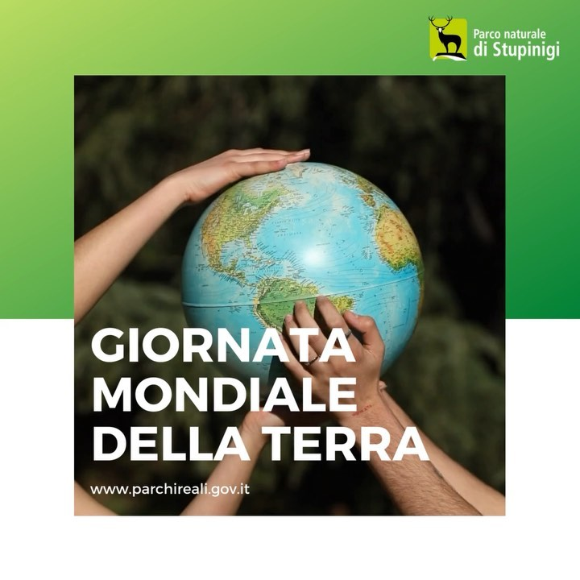

None podľa @parco.stupinigi — Normy Jedál
🦋 Siamo tutti farfalle. La Terra è la nostra crisalide.
(LeeAnn Taylor)
Oggi è La Giornata mondiale della Terra, istituita per celebrare l'ambiente e la salvaguardia del pianeta Terra!
🌳 I Parchi e le aree protette sono nati proprio in difesa della biodiversità, per la protezione delle specie animali e vegetali e la salvaguardia degli ambienti.
Ma i Parchi sono anche in grado di dare respiro alle persone che questi territori li vivono o li vogliono visitare.
Per questo è importante che il Parco diventi incubatore di buone pratiche in tutela dell'ambiente, in un progetto di coesistenza uomo-ambiente che può e deve esistere.
Tu cosa puoi fare nel tuo piccolo per aiutarci in questa mission?
👉 Guarda il Reel e inizia il cambiamento...
#parchireali #piemonteparchi #parchinaturali #parcodistuinigi #stupinigi #parcostupinigi #candiolo #nichelino #orbassano #vinovo #none #beinasco #theworldday #giornatamondailedellaterra #tutela #biodiversità #buonepratiche #natura #terra #inquinamentoluminoso #raccoltadifferenziata #prodottidistagione #prodottikm0 #ecoturismo #scoproparco #scoprinatura #areeprotette #salvaguardia